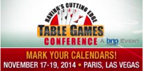

Where it pays to roll Nil, Nothing, Zilch!
The Rules
Here is where you can learn to play On A Roll Dice Poker
The Odds
Here is where you can find all the odds for On A Roll Dice Poker
My Story
Here is where you will find a brief overview of On A Roll Dice Poker since its inception
How To Play On A Roll Dice Poker
On A Roll Dice Poker is an exciting new poker game played with five dice that are numbered from one to six.
Players compete against a pay table, not against the Dealer or other players.
A player must make at least one Dice Poker wager on any of the four combinations. It is a mandatory one roll wager that wins if the combination is rolled and it loses if it is not rolled.
A player may also make an optional side wager on the Zilch side bet. This optional wager can be placed anytime the "Off" button is in use. The player must place a Dice Poker wager in order to place a Zilch wager.
Players are wagering that the Shooter will roll Zilch or nothing. If achieved, players have a guaranteed payout and qualify for the 5 Sixes Bonus Round.
When Zilch is obtained and prior to the 5 Sixes Bonus Round commencing, a player may place one additional No Six bet, wagering that the Shooter will not roll a six during the 5 Sixes Bonus Round. After each roll where a six is not rolled, the player has the option of collecting their winning wager or letting it ride for a chance of increased payouts. If a six is rolled at any time during the 5 Sixes Bonus Round, the No Six wager loses.
The 5 Sixes Bonus Round is a completely separate bonus round where each player has the opportunity at an additional payout if the Shooter can roll 5 Sixes in up to 5 rolls. After each roll the Dealer removes each six that has been rolled. The Shooter continues rolling the remaining dice until 5 Sixes is achieved or for 5 rolls, whichever comes first.
The Shooter is the player with control of the dice. This player may continue to shake the dice provided they wagered on the exact winning Dice Poker combination or until Zilch is rolled and the 5 Sixes Bonus Round is completed. Until a player elects to become the Shooter, the Dealer shakes the dice.
On A Roll Dice Poker Rankings
On A Roll Dice Poker hands are determined by what appears on the uppermost sides of the dice. Rankings include all 5 dice and are, in order of highest to lowest rank:
Five of a Kind - A roll having the same number of spots showing on all five dice.
Four of a Kind - A roll having the same number of spots showing on four dice. The outcome of the 5th die when it does not improve the hand is inconsequential.
Straight - A roll having one die showing six spots, one die with five spots, one die with four spots, one die with three spots and one die with two spots OR one die with five spots, one die with four spots, one die with three spots, one die with two spots and one die with one spot. Both Straights are of equal value.
Full House - A roll having the same number of spots showing on three dice and the same but different number of spots showing on two dice.
Three of a Kind - A roll having the same number of spots showing on three dice. The outcome of the 4th & 5th dice when they do not improve the hand are inconsequential.
Two Pairs - A roll having the same number of spots showing on two dice and the same but different number of spots on two dice . The outcome of the 5th die when it does not improve the hand is inconsequential.
Pair Only - A roll having the same number of spots showing on two dice. The outcome of the 3rd, 4th & 5th dice when they do not improve the hand are inconsequential.
Zilch - A roll not having any of the above combinations.
On A Roll Dice Poker Payouts
| Dice Poker Ranking | Pay Table |
|---|---|
| Five of a Kind | 40 to 1 |
| Four of a Kind | 12 to 1 |
| Straight | 10 to 1 |
| Full House | 8 to 1 |
| Three of a Kind Only | 5 to 1 |
| Two Pair Only | 3 to 1 |
| One Pair Only | 1 to 1 |
| Zilch | Pay Table |
|---|---|
| Guaranteed Payout & Entry to 5 Sixes Bonus Round | 10 to 1 |
| 5 Sixes Bonus Round | Pay Table |
|---|---|
| 1 Roll | 500 to 1 |
| 2 Rolls | 300 to 1 |
| 3 Rolls | 100 to 1 |
| 4 Rolls | 50 to 1 |
| 5 Rolls | 25 to 1 |
| No Six | Pay Table |
|---|---|
| Roll 1 | 1 to 1 |
| Roll 2 | 5 to 1 |
| Roll 3 | 12 to 1 |
| Roll 4 | 35 to 1 |
| Roll 5 | 90 to 1 |
The Maximum Payout amount per hand is $25 000, which includes the Zilch & 5 Sixes Bonus Round.
The Story of On A Roll Dice Poker

My name is Norman Rondeau and I am the inventor of On A Roll Dice Poker. With the success of the game Trivial Pursuit in the early 1980's I, like many other inventors began to develop games that I thought would be the next big mega hit. Over the next few years I developed over 50 games and toys, made prototypes for some which I tried to market and license. Two of the games I invented, Sound F/X and Freeze Frame were presented to representatives from Mattel but unfortunately were not picked up. I stopped developing games in 1993.
Over the next 20 years, I redirected my energy raising a family, co-owning and operating the Severn River Inn as well as starting at the ground level in the casino industry working as a Dealer at Toronto Charity Casinos. I worked my way up from the position of Floor Supervisor at Casino Windsor and held a number of progressive positions at Casino Rama from Pit Manager, Shift Manager, Table Games Manager to Baccarat Room Manager, which is the position I currently have.
After being asked by the Director of Gaming Operations to write the Rules of Play for a new game submission to the Alcohol and Gaming Commission of Ontario (AGCO), invented by a local resident in the Orillia area in March 2012, it inspired me to dust off the old game concepts and get back into the game invention business. I thought, if I can write the rules of a casino game for someone else that gets approved by the AGCO then surely I can do it for myself! With 20 years of casino experience watching the transformation and introduction of new table games and listening to both employees and customers alike I was inspired to create a new casino game loosely based on a dice game I had been playing with my family at the kitchen table for about 25 years.
In November, 2012 I pitched a new dice game concept to Gaming Operations Executives Glenn Trickey and John Drake. They assured me that if I could write the Rules of Play submission to the AGCO, Casino Rama would submit, sponsor and trial the game on the floor. I wrote the rules, they were submitted in July and approved in November 2013. I will always be grateful and thankful to these two executives for demonstrating our Progressive and Achievement Core Value. They are committed to creating and maintaining a work environment where opportunities for creativity, innovation and continuous improvement is recognized and celebrated.
Field Trial
On A Roll Dice Poker went live on the floor from May to September 2014. The feedback from Dealers, Supervisors and Pit Bosses who dealt or oversaw the operation of the game had nothing but positive comments about how fun it was deal and watch the interaction amongst the Players. Since the game is so unique some customers that did play the game, at first looked puzzled over all of the circles on the layout but after a quick 5-minute lesson began playing and really enjoying being able to shake the dice for themselves and get a chance to roll Zilch and play the 5 Sixes Bonus Round. There was multiple players who rolled 5 Of A Kind in one roll which paid 1200 to 1. On one occasion, one player wagered $15 and won $18,000. There were certainly a lot of cheers and high fives all around the table. The purpose of a Field Trial is for a casino to review the performance and profitability of a new game. Since casino floor space is at a premium, all games whether they are traditional or new need to reach and maintain a certain level of profitability otherwise they are removed from the gaming floor. In spite of the many positive reviews from employees and customers alike, On A Roll Dice Poker did not meet the minimum revenue requirements at Casino Rama.
A New Way To Play!
After reviewing the financial performance of the game it became clear that a change to the game needed to be made to reduce the volatility of the game. To that end I modified the wagering options and created new pay table options that make the game less susceptible for a casino while making the game even easier to learn and more fun to play.
Where To Play On A Roll Dice Poker
On A Roll Dice Poker will be available to demonstrate at the Table Games Conference in Las Vegas.

Mobile: (705) 345 0561
Email: rondeau4@sympatico.ca
On A Roll Dice Poker is owned by Skyward Gaming Patent Pending